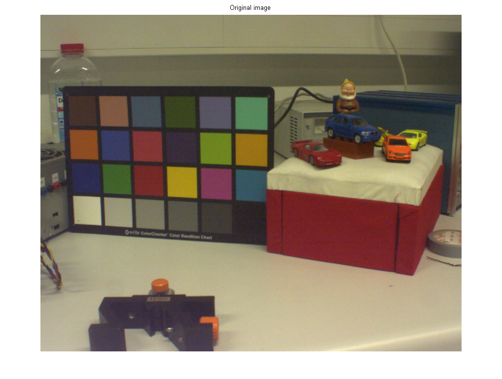
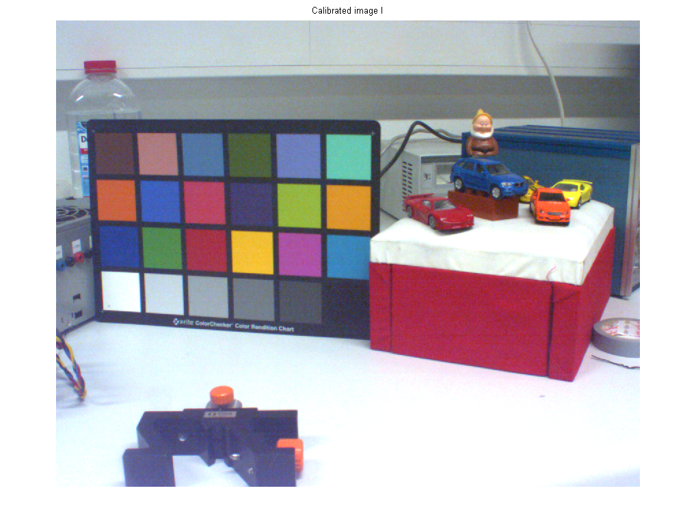
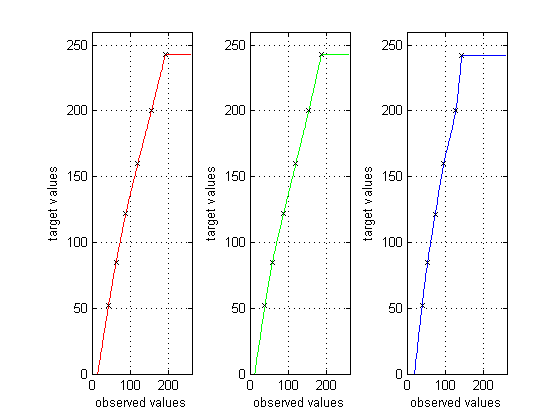
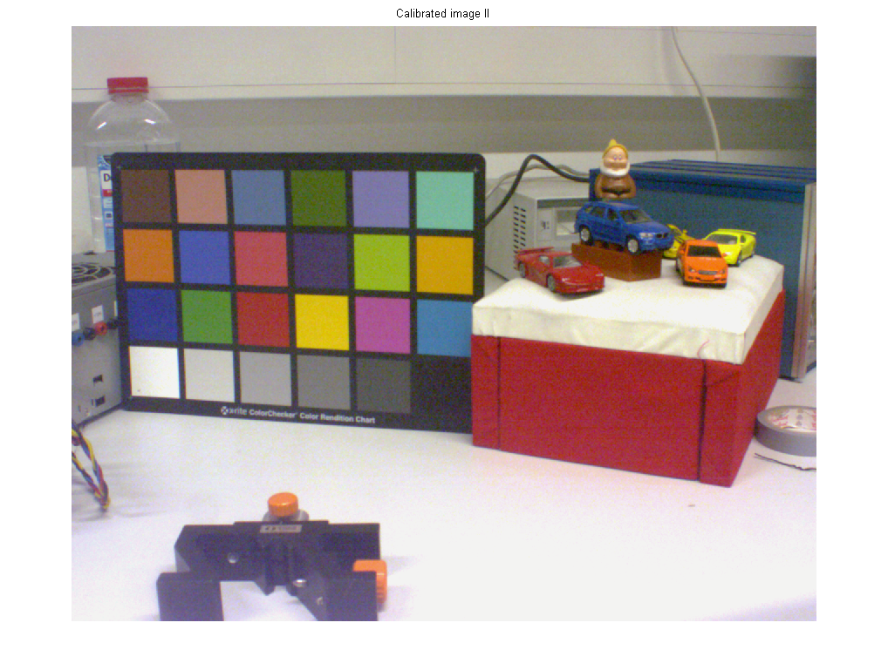

Contents
clear all close all img = imread('pictures/pic_D50_5870K.png'); color_checker = imread('color_checker.png'); figure, imshow(img); title('Original image');
Warning: Image is too big to fit on screen; displaying at 67%
implement your own calibration method
select colored squares:
[ c_img, r_img, val_img ] = getSquareColors( img, 4 ); [ c_target, r_target, val_target ] = getSquareColors( color_checker, 4); % calculate mixing coefficients % TODO: implement the function calibCam [ n_img ] = calibCam( val_img, val_target, img ); figure, imshow(n_img); title('Calibrated image I');
Warning: Image is too big to fit on screen; displaying at 67% Warning: Image is too big to fit on screen; displaying at 67%
compare with gray value curve fitting
[ c_img, r_img, gray_img ] = getSquareColors( img, 6 );
[ c_target, r_target, gray_target ] = getSquareColors( color_checker, 6 );
[ a_rgb ] = grayValueCurveFitting( gray_img, gray_target, img );
figure; imshow(a_rgb);
title('Calibrated image II');
Warning: Image is too big to fit on screen; displaying at 67% Warning: Image is too big to fit on screen; displaying at 67% 
compare the calibrated image with the ground truth data
[c_comp, r_comp, n_img_val] = getSquareColors(n_img, 6); [a_img_val] = getImColors(a_rgb, c_comp, r_comp); [~, ~, c_img_val] = getSquareColors( color_checker, 6); n_diff = zeros(1,6); a_diff = n_diff; for i=1:6 n_diff(i) = norm(n_img_val(i,:)-c_img_val(i,:)); a_diff(i) = norm(a_img_val(i,:)-c_img_val(i,:)); end n_diff a_diff
Warning: Image is too big to fit on screen; displaying at 67% n_diff = 15.5410 18.1124 24.4904 26.5576 24.6642 55.4472 a_diff = 14.7731 28.1510 17.0882 18.0705 15.3529 66.0316